这是实际应用中新接入的两页，不是另起的静态样稿。沿用已经确认的清透、圆润配色与原图标；没有发布、安装或替换本地 App。以下全部是虚构演示数据。
阶段置顶 → 记录小步骤 → 月度复盘与便笺 → 时间轴回看 → 习惯管理与筛选。字幕只是录屏说明，不是常驻界面。
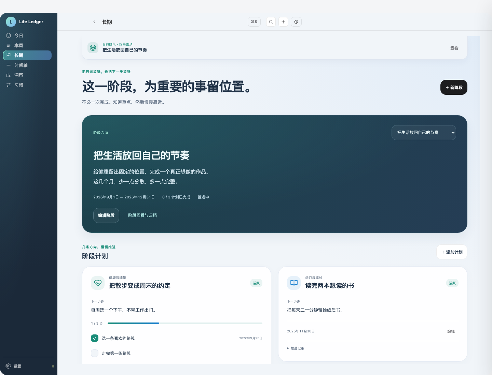
页面向下滚动时，顶部保留一条轻量的当前阶段摘要，不让整个大卡片占住视野。阶段有明确起止日期、重点和计划完成数；计划按健康、学习、工作、生活等领域标记，也允许自定义领域。每张卡可以写下一步、拆小步骤并留下完成日期。
「本周」中的长期入口也会进入这一页，不再另开一套重复清单。所有旧长期目标仍保留，没有被自动塞进一个新阶段。
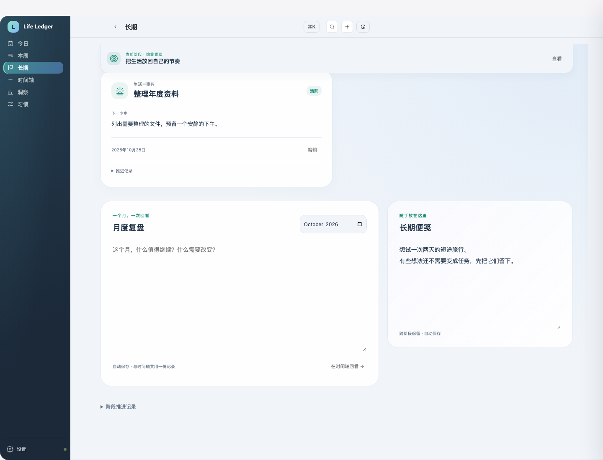
月度复盘可以直接选月份写，沿用原来的自动保存与文字记录；不是另一份副本，点「在时间轴回看」就能看到同一份内容。长期便笺独立保存，不会因为换阶段而清空。报税资料、未来安排等可以作为不绑阶段的长期事项，设置自己的回看日期。
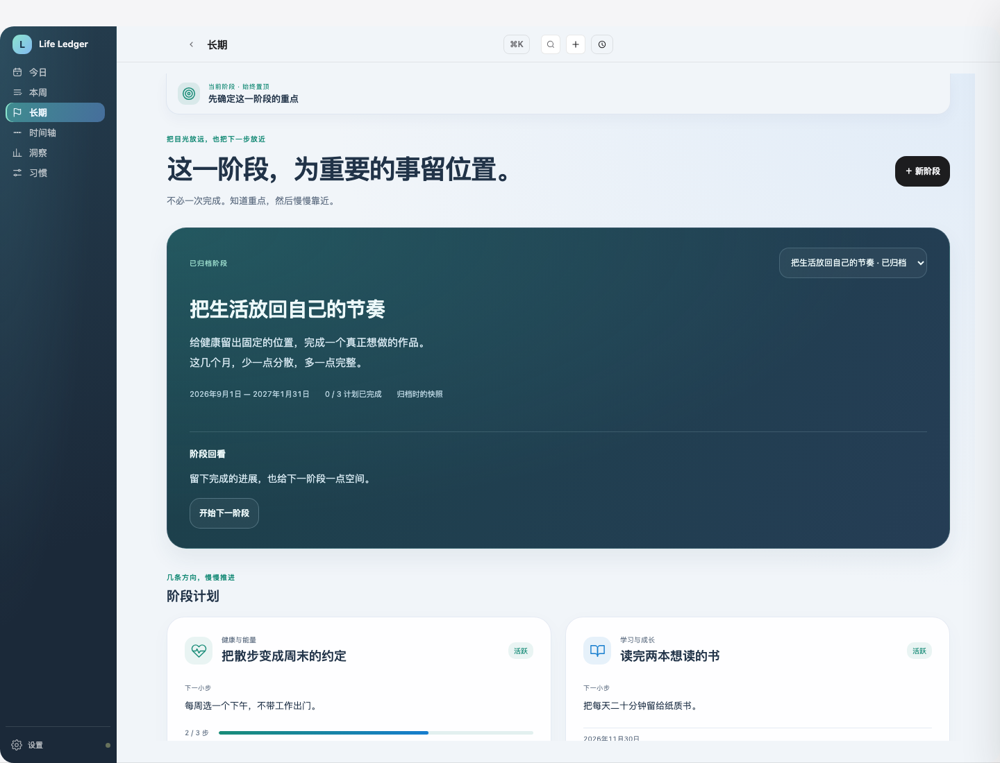
到了回看日期，会在页内显示提示。你可以调整日期继续推进，也可以写一段回看后归档。归档保留当时的计划与步骤快照，不能从归档卡片误改；开始下一阶段时，是否带入未完成计划由你选择。
带入会创建有来源关系的新计划，并明确将回看日期设为新阶段结束日，不会改写旧阶段。暂停、编辑和步骤变化也会留下日期记录。这里不是系统通知或自动延期，不会替你自行决定。
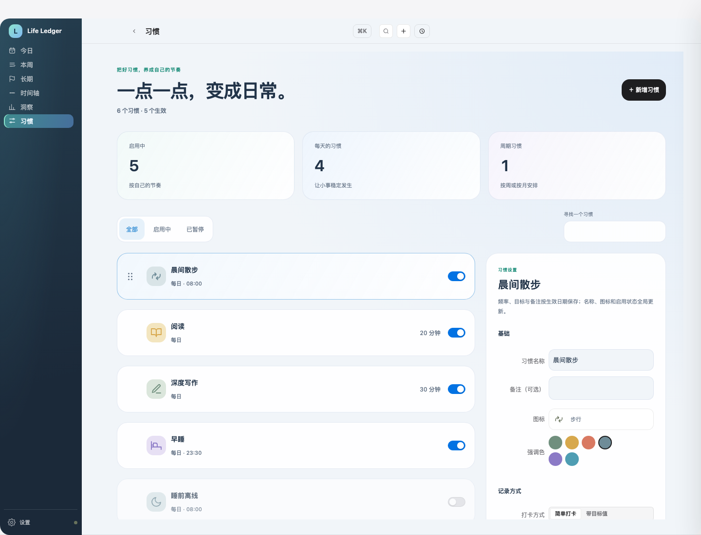
原有习惯图标、配色、频率、生效日期、备注和启用开关继续使用，新增搜索与全部／启用／暂停筛选。列表可用鼠标拖动，或聚焦手柄后按 Alt + 上下方向键排序；筛选隐藏的习惯不会被丢掉。
设置面板保留原有数据规则：频率、目标与备注按生效日期保存，名称、图标、配色和启用状态是全局属性。窄窗口改为单列，点击习惯后滚动到设置，不制造两层滚动窗口。
长期
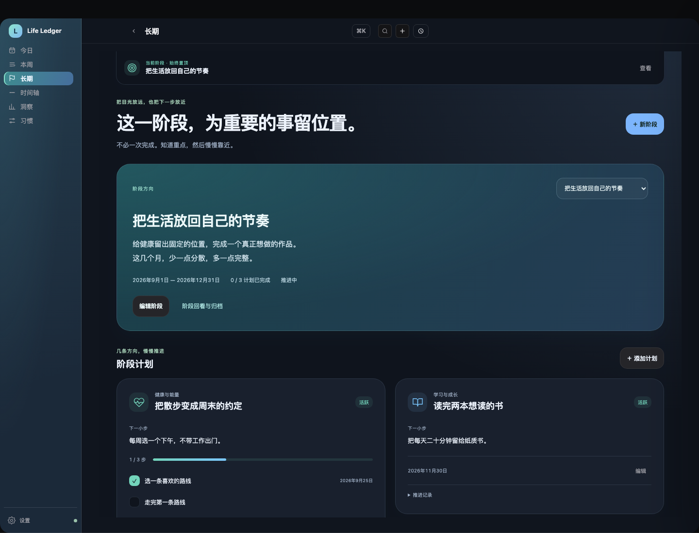
习惯
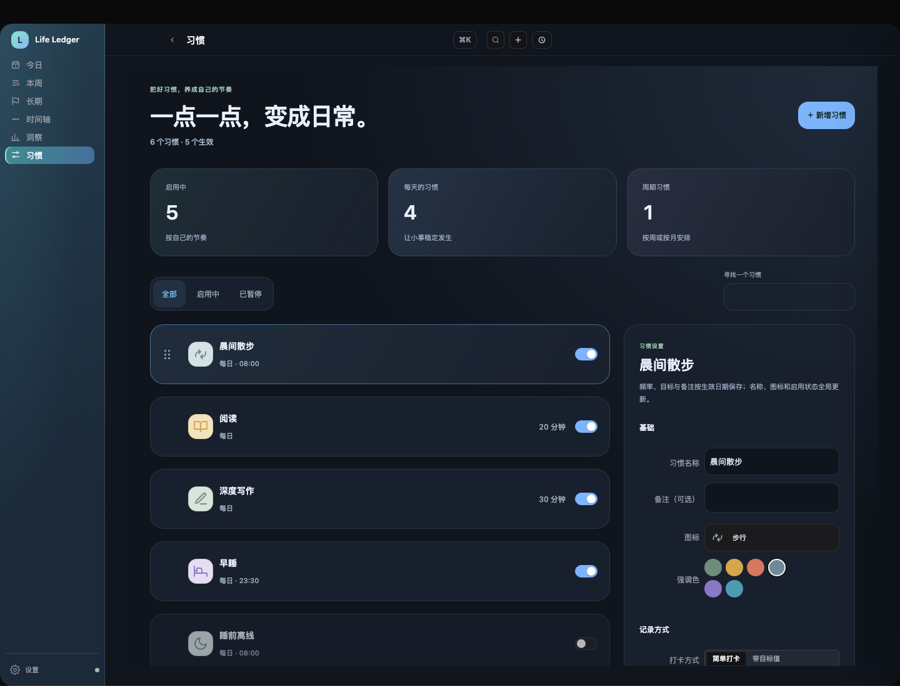
English
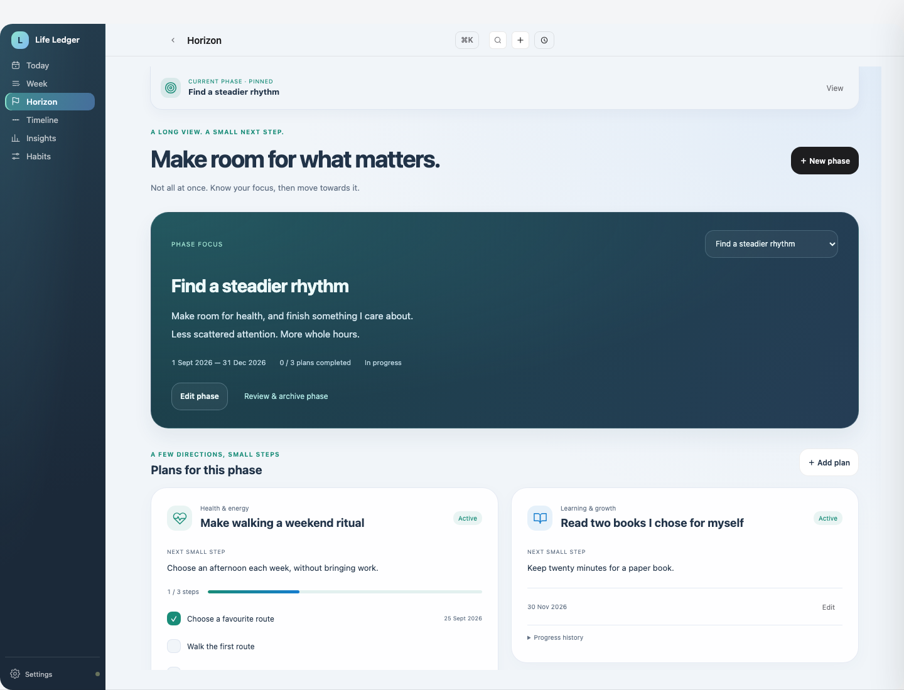
Deutsch
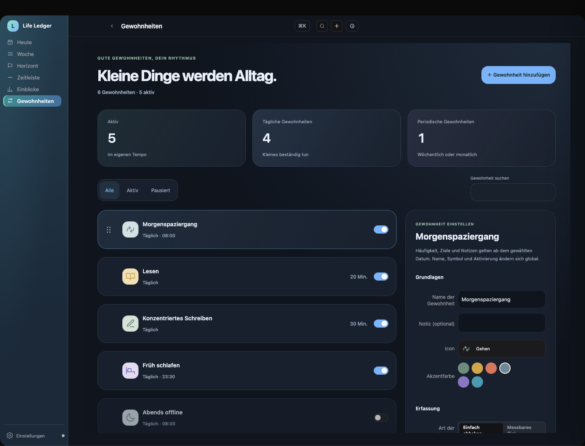
中文 mobile
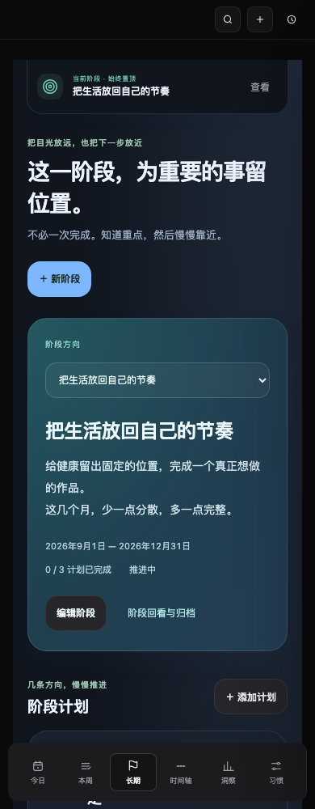
English mobile
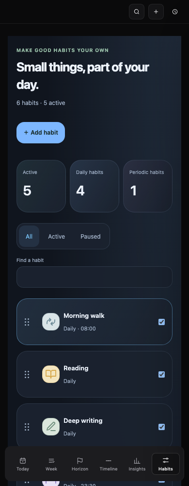
Deutsch mobile
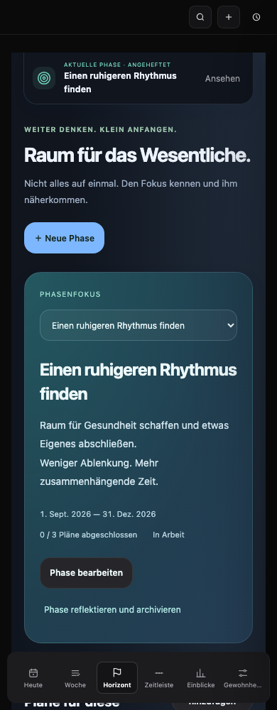
900px window
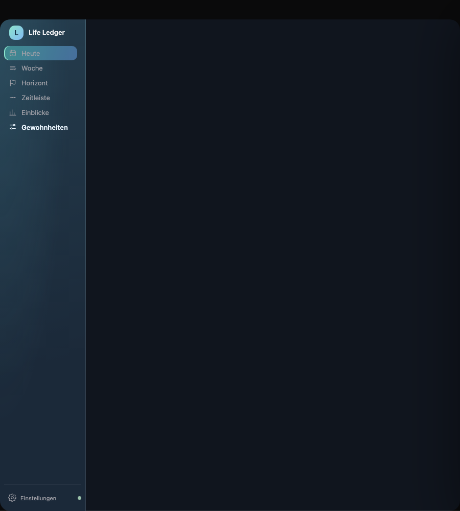
旧的长期目标会在「长期事项」中出现，未设置的阶段与日期不会被悄悄补上。新增阶段和便笺纳入本版 JSON 备份／恢复；局部恢复旧备份不会清空它们。下面是没有阶段、只有旧目标时的真实状态。
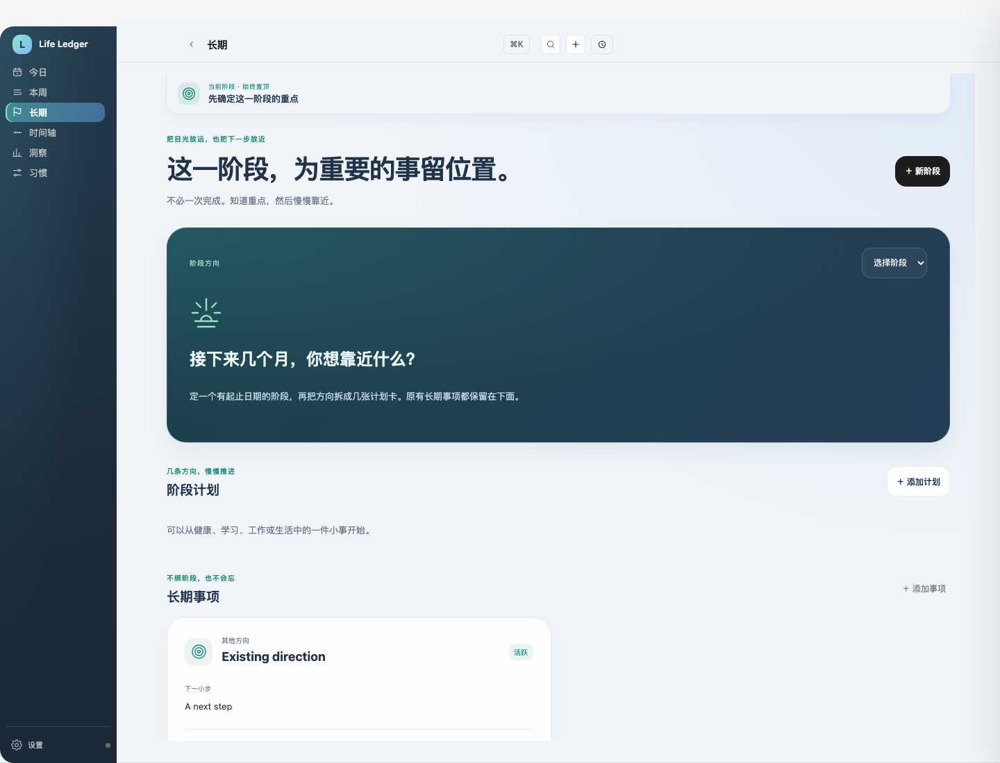
参考 Bullet Journal 的月度回顾与迁移，以及 AppFlowy 的状态／里程碑路线图。借鉴组织方式，不复制它们的界面或源码；没有增加依赖、外部模型调用或账户授权。
本轮场景结果 · 保存、备份与限制说明。本轮不等于原生包验收，仍等待你确认两页布局与操作方式。